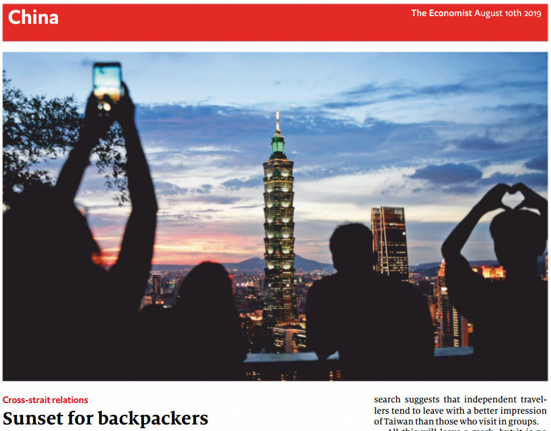
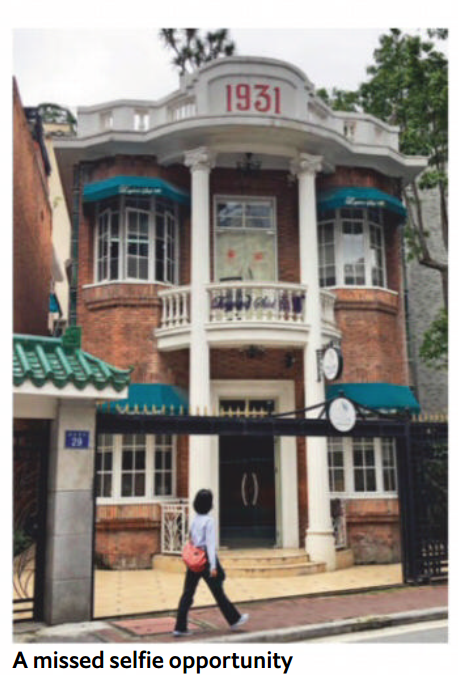
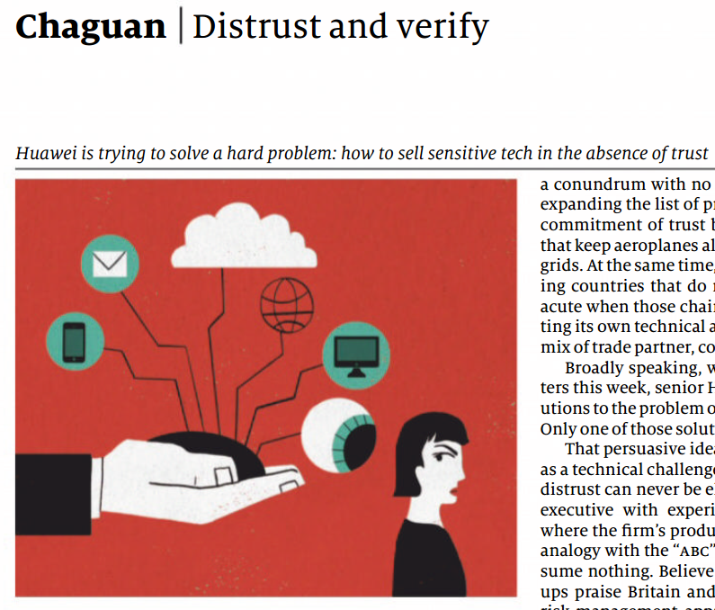

ABSTRACT: After reading the three articles of “China” section in “Economist 20190810”, I am willing to write some comments on these issues respectively. There is no doubt that “Economist” is a famous and relatively neutral media, but we also need have our own thought.
- Tensions with Taiwan / Cross-strait relations / Sunset for backpackers
- Saving old buildings / Historic preservation / Old buildings, new chic
- Chaguan The Huawei conundrum / Distrust and verify
1. Sunset for backpackers

Cross-strait relations have been improved and enhanced by the efforts of many righteous mainlanders and taiwaneses in the past decades. Peace and cooperation are definitely a win-win choice for both mainland and Taiwan. As the article said, mainland tourists made up two-fifths of all visitors in Taiwan five years ago. Even now, visitors form mainland still accounted for over one-quarter of Taiwan’s tourist arrivals in the first half of this year. Meanwhile, mainland also benefits a lot in the process of bilateral trade and investment with Taiwan. The technologies, commodities and capitals, etc. of Taiwan was indispensable in the reform and opening up process of mainland.
While there inevitably exists some disharmony in cross-strait relations considering the complex problems left over by history. Fortunately, the overall situation has been under control in most periods. But Taiwan’s ruling Democratic Progressive Party, abhoring the idea of unification and supporting the anti-government protesters in Hong Kong overtly, greatly annoyed the central government of mainland. And a sudden suspension of solo-travel programme for mainlanders just ensued from it. This incident just coincides with the regional leader’s and legislative elections. We just hope that a more sincere and friendly leader will emerge and win in the important election.
2. Old buildings, new chic

This article focus on the topic of historic buildings preservation in Guangzhou city, China. I would like to refer to it as a piece of news rather than a review for any subjective idea that was not found in this article. This article just mentioned the outward appearance of some old villas and alleys, as well as an NGO devoting to protect these old buildings in China.
3. Chaguan: Distrust and verify</font>

As the trade war between China and America going on, Huawei, a high-tech firm of China, is bearing the brunt of American sanctions. In terms of the proper reactions and abundant technical achievements, Huawei has been regarded as the national pride domestically.
While in the era of globalization, being landed in the American Commerce Department’s “entity list” is definitely a vital blow for such a multinational corporation. Though being confronted with the vital challenge, Huawei is still progressing in its seaonal revenue. But trust and credit are of most importance for a network device supplier. Huawei apparently has been aware of it and adopted various methods to restore its credit to foreign countries, including the openness of its labortary to foreign journalists recently.
Huawei also bring up two solutions to mitigate the security worries that other countries concern about. The first solution, regarded as the persuasive on by the article of Economist, is to treat distrust in global supply chains as a technical challenge, rather than a political one. In that case, distrust can never be eliminated but may be mitigated. As a Huawei executive mentioned, the cyber-security should abide by the “ABC” princle, that is “Assume nothing. Believe nobody. Check everything”. The second solution, deemed to be less persuasive, is to give written or verbal assurances from the Chinese government.
Anyway, we are hoping the merchandising environment will be much fair and transparent. Huawei, come on.